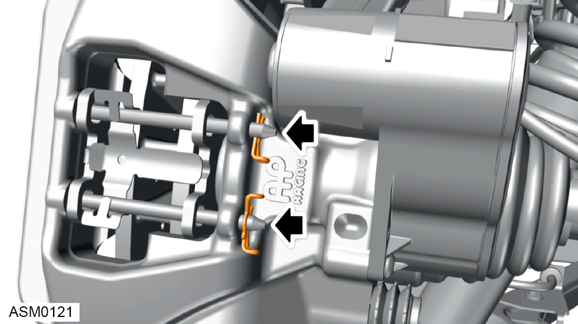
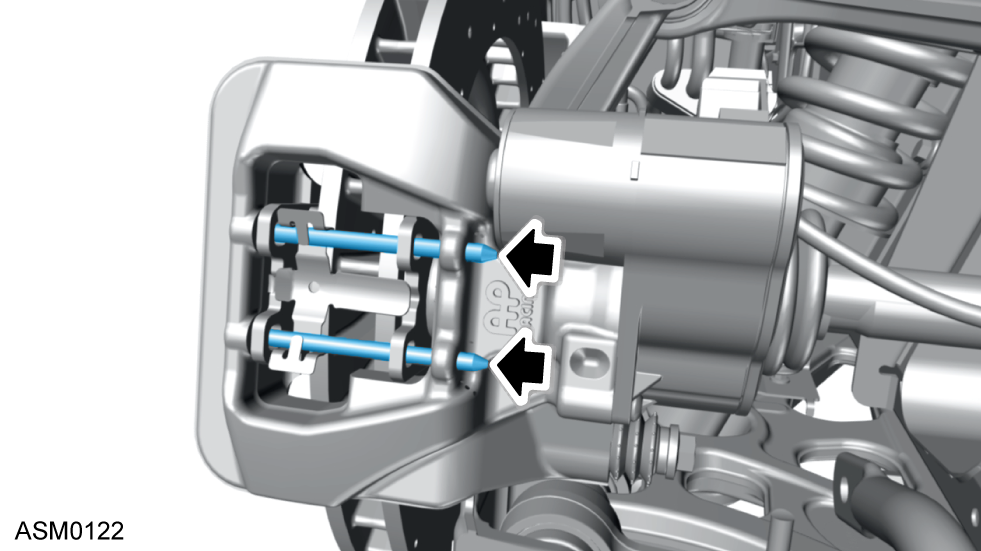
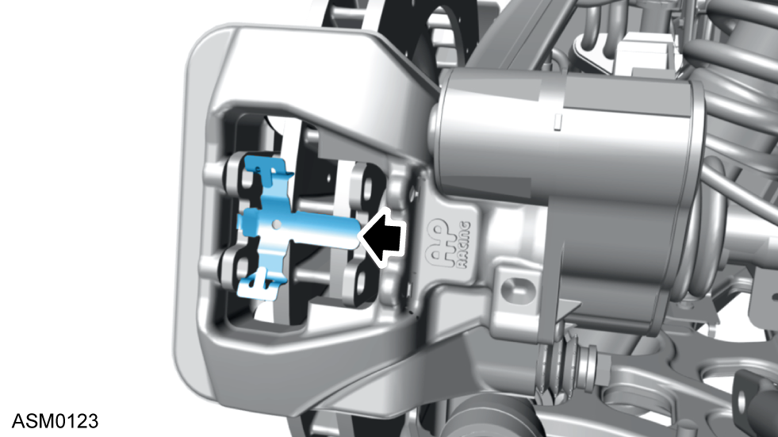
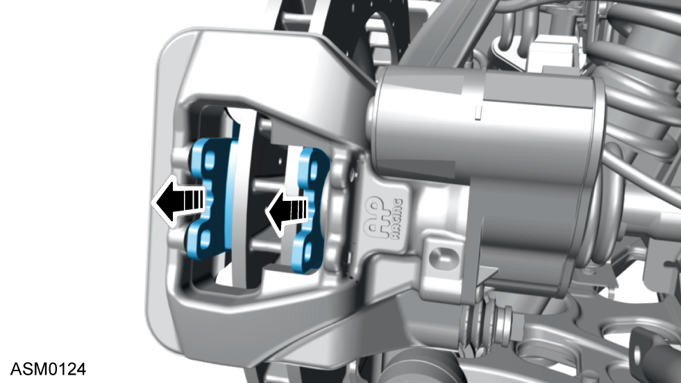

Parking Brake Pads
Print
Operation Code: 33.01.13-02
Removal
- Remove rear wheel. Refer to procedure.
- Set parking brake caliper to service position using Lotus insight tool.

- Remove brake pad retaining clips (x2).

- Remove the brake pad retaining pins (x2).

- Remove brake pad anti-rattle spring.

- Remove brake pads.
Installation
- Installation is the reverse of removal procedure except for the following:
- Reset caliper from service position using Lotus insight tool.